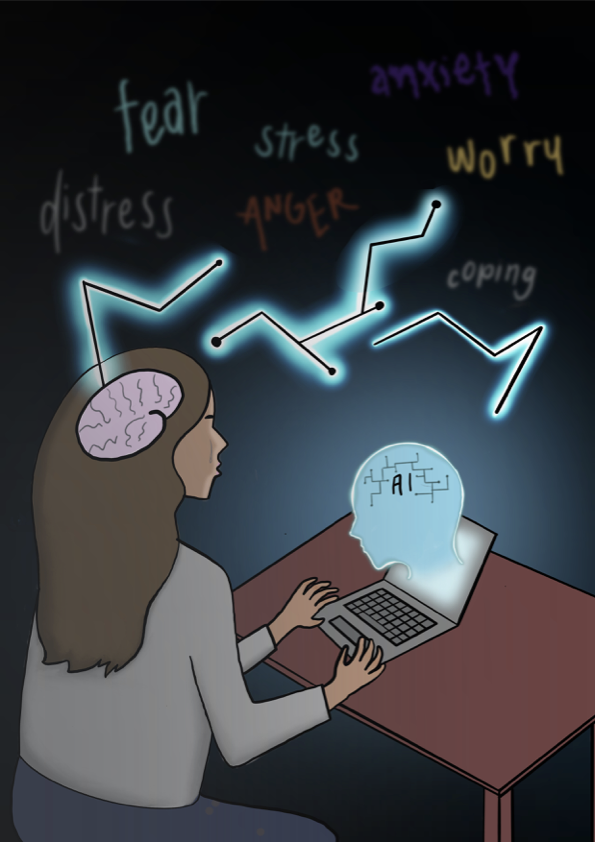

It is two in the morning. My group chat is asleep, and my unopened Canvas notifications sit there like a to-do list that keeps rewriting itself. I open a browser, type out a messy brain dump about anxiety, family, and classes, and hit send. A few seconds later, a cheerful paragraph appears and says, “Nyneishia, you sound overwhelmed right now. Take a breath. Here are a few things you can do to help yourself fall asleep. Or, would you like to talk about something else?”
No receptionist. No waitlist. Just me and a fast algorithm.
There’s a structural, systemic reason this late-night ritual feels so tempting. Mental health care systems worldwide are stretched beyond capacity. Many people never see a therapist at all. Even in high-income countries, the majority of people with mental health concerns receive no formal treatment (Abd-Alrazaq et al.). That gap has pushed researchers and companies to try digital solutions, including chatbots that offer scripted or semi-intelligent support for depression, anxiety, and stress.
A 2020 systematic review looked at twelve such chatbot studies and found something interesting. Across trials, chatbots produced small to moderate improvements in depression with no serious adverse events reported (Abd-Alrazaq et al.). The catch is that the evidence was of low quality, and many studies had a high risk of bias. In other words, early chatbots are on the right track, but are nowhere near ready to replace human therapists. Their long-term safety and efficacy are unknown (Abd-Alrazaq et al.).
Then generative AI arrived and changed everything.
In a 2025 study, Xiaochen Luo and colleagues went onto Reddit to ask a simple question: what happens when people start using ChatGPT as “therapy”? They collected Reddit posts that mentioned both “ChatGPT” and “therapy” and ran a thematic analysis of how users actually engaged with the model.
Reddit users were not just asking for quick advice. They were using ChatGPT during periods of distress, using it as a safe space to share vulnerable thoughts. Others used it for self-discovery, asking the model to reframe their patterns, point out blind spots, or brainstorm ways to change. A huge theme was companionship. Some users admitted they had almost no one to talk to offline, so they “simply talk to ChatGPT all day” to feel heard and less alone (Luo et al.).
From an evolutionary perspective, this makes sense. Our social cognition systems are tuned to treat anything conversational, responsive, and emotionally fluent as a social partner. People are building internal representations of ChatGPT as a friend, therapist, assistant, and authority figure (Luo et al.). Doesn’t that sound an awful lot like a human? ChatGPT does not have a mind, but our brains are quick to treat it as if it does.
At the same time, the appeal of large language models like ChatGPT raises clear risks. In the Reddit posts, users rarely questioned privacy or accuracy, often exchanging those concerns for immediate emotional relief (Luo et al.). Existing clinical evidence suggests that while AI chatbots can reduce stress, the effects are mediocre and do not support their use as stand-alone mental health treatment (Abd-Alrazaq et al.).
Taken together, these findings point to a very human response to a strained system. In the middle of a global therapist shortage, people are improvising. At night, when no one is awake and everything feels louder, they turn to a large language model and talk. Not because it is wise or profound, but because it is there.
Nonetheless, that instinct deserves restraint. As Dr. Geoffrey Hinton, the godfather of AI, has warned, we still do not understand what these systems may become or how dependent we are letting ourselves grow. That warning matters at 2:00 a.m. ChatGPT sounds friendly, but it is still infrastructure without a heart. It can change, disappear, or break without notice. The smarter move may be knowing when to close the browser, text a real person in the morning, and step back into the messy work of being human. Sometimes the healthier response to stress is not another prompt, but a pause, a breath, and maybe even touching some grass.
References
Abd-Alrazaq, Alaa Ali et al. “Effectiveness and Safety of Using Chatbots to Improve Mental Health: Systematic Review and Meta-Analysis.” Journal of Medical Internet Research vol. 22,7 e16021. 13 Jul. 2020, doi:10.2196/16021.
Luo, Xiaochen et al. “Shaping ChatGPT into my Digital Therapist: A thematic analysis of social media discourse on using generative artificial intelligence for mental health.” Digital Health vol. 11 20552076251351088. 10 Jul. 2025, doi:10.1177/20552076251351088.